About
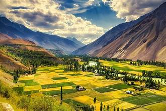
Phander Valley is a stunning and serene destination nestled in the Ghizer
District of Gilgit-Baltistan,
Pakistan. Known for its breathtaking natural
landscapes, the valley is characterized by rolling hills,
vibrant green fields,
crystal-clear rivers, and the strikingly beautiful Phander Lake. This scenic
area,
often called the "Switzerland of Pakistan," offers visitors
perfect blend of natural beauty, cultural
heritage,
and tranquil ambiance.
Valley is blessed with lush green fields, terraced slopes,
and thick forests.
The Ghizer River, which winds through the valley,
adds to its charm
with its clear waters, creating a stunning contrast against the
greenery
and rocky hills.Phander Valley offers plenty of activities for nature lovers
and adventure seekers.
Fishing in Phander Lake is a popular pastime.
Highlights of Phander Valley
Phander lake
The valley's most famous attraction, Phander Lake is an azure-blue lake surrounded by poplar trees, meadows, and rugged mountains. Its clear, still waters make it ideal for fishing and boating, and the reflections of the surrounding landscape on the lake's surface make it a paradise for photographers.
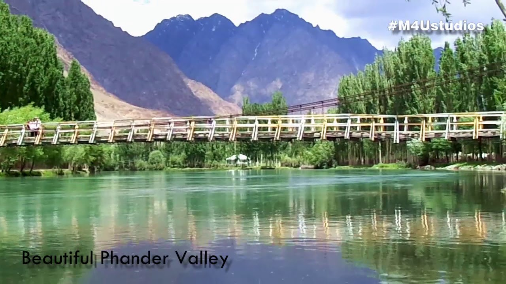
Nature and Landscape
Valley is blessed with lush green fields, terraced slopes, and thick forests. The Ghizer River, which winds through the valley, adds to its charm with its clear waters, creating a stunning contrast against the greenery and rocky hills.
Peaceful Atmosphere
One of the main reasons visitors are drawn to Phander Valley is its peaceful and serene environment. Unlike busier tourist spots, Phander retains a sense of untouched beauty and tranquility. It is a perfect place for those seeking solitude, relaxation, and a connection with nature.
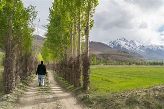
Friendly Community
Friendly Community people of Phander Valley are known for their hospitality and kindness. They belong to ethnic groups such as Wakhi and Shina, who have maintained their unique cultures, languages, and traditions. The local community takes pride in their heritage and is always willing to share it with visitors.
Outdoor Activities
Phander Valley offers plenty of activities for nature lovers and adventure seekers. Fishing in Phander Lake is a popular pastime, as the lake is stocked with trout. There are also numerous hiking trails, including treks that lead to nearby villages, lakes, and viewpoints offering panoramic views of the valley. .
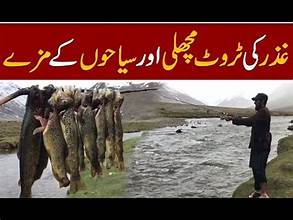Best Time to Visit
The best time to visit Phander Valley is from May to October, when the weather is warm, and the valley is in full bloom. During this time, the fields and \ meadows are vibrant green, and the weather is mild, making it ideal for outdoor activities and sightseeing. In winter, the valley is often covered in snow, making access more challenging but offering a magical winter landscape for those willing to brave the cold.
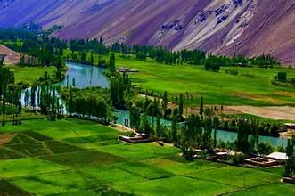
History and Background of Phander Valley
Phander Valley holds a rich cultural and historical significance in the region. Historically, it served as
a strategic area within the ancient trade routes between Central Asia and the Indian subcontinent. In earlier centuries,
the valley was a part of the larger cultural and trade networks of the Silk Road, connecting different regions through
passes and trade routes. The valley is home to diverse ethnic communities, primarily the Wakhi and Shina people,
each with unique languages, traditions, and cultural practices. Over centuries, these communities have maintained their
cultural identity while also adopting influences from neighboring regions. The people of Phander Valley are Known
their hospitality, warmth,and resilience in a mountainous terrain that offers both challenges and beauty.
Phander Lake the valley's centerpiece, has its own historical and cultural importance.
the lake has been a source of myths and stories passed down through generations. Many believe the lake is sacred,
and it has been part of local folklore as a symbol of peace and natural beauty. In recent years, Phander Valley has
become increasingly popular as an eco-tourism destination due to its unspoiled beauty and peaceful ambiance.
The valley’s rivers, forests, and trails offer numerous activities, such as fishing, hiking, and exploring
traditional villages. Today, Phander Valley remains a symbol of the rich cultural heritage and natural splendor
of Gilgit-Baltistan, preserving its traditions while welcoming those who seek to experience its tranquil landscape
and timeless charm.
Historical house
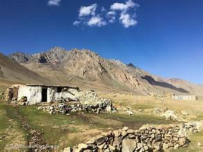Handicraft Skill
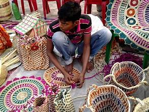Language
Attraction
Phander lake
Known as the “Heart of Phander Valley,” Phander Lake is a breathtaking turquoise lake surrounded by green meadows, poplar
trees, and mountains. Its crystal-clear waters make it ideal for boating, fishing, and photography. The calmness of the lake
and its scenic surroundings are perfect for relaxing and picnicking.
Activities: Fishing (especially trout), boating, picnicking, and photography.
Viewpoint of Phander valley
There is a viewpoint near Phander Valley that offers a panoramic view of the valley below. This viewpoint gives a sweeping view of Phander Lake, the Ghizer River, and the surrounding fields and forests. It’s an ideal spot to witness sunrise or sunset.
Hundrab lake
Located near Phander Valley, handrab Lake is a beautiful lake surrounded by mountains and meadows. It is less crowded than Phander Lake, offering a more secluded experience.
Activities: Fishing, picnicking, hiking, and photography.
Khalti lake
Khalti Lake is a glacial lake located about 30 km from Phander. It is known for its deep blue color and cold, clear waters. In winter, the lake freezes over, creating a unique landscape, while in summer, it’s a popular spot for fishing and picnicking.
Activities: Fishing, sightseeing, photography, and picnicking.
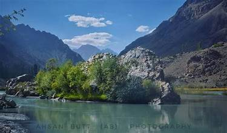
Shandur pass
Though a bit farther away, Shandur Pass is famous for hosting the annual Shandur Polo Festival, a cultural event featuring polo matches between Gilgit-Baltistan and Chitral teams. The pass itself, located at 12,200 feet, offers breathtaking mountain scenery.
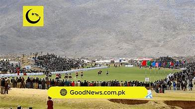
Ghizer river
The Ghizer River flows through Phander Valley, creating a stunning contrast with its clear blue waters
against the valley’s lush greenery. It’s a popular spot for fishing and is surrounded by trails perfect for leisurely walks.
Activities: Fishing, riverside picnics, hiking, and scenic drives.
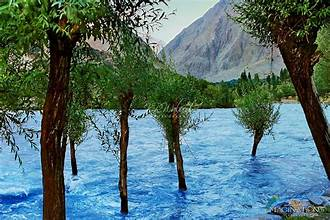
Culture
Languages
Khowar and Shina Languages: The people in Phander Valley primarily speak Khowar and Shina. These languages are part of the local heritage, passed down through generations and forming an integral part of the community’s identity. Due to tourism and inter-regional interactions, Urdu is also commonly spoken, making communication easier with visitors from other parts of Pakistan.
Clothing
Men: Men in Phander Valley often wear traditional shalwar kameez, along with a woolen cap called a
"pakol,"
especially in the colder months.
Women: Women traditionally wear brightly colored dresses, with shawls or scarves covering their heads.
During festivals, their attire may include intricate embroidery that reflects local artistic styles.
Cuisian
Being a mountainous region, dairy is a staple in the local diet. Homemade butter, yogurt, and cheese are widely consumed.
Traditional Dishes: Popular dishes include mul, mulida, rishok,
dawdaw,
shashalnk etc.
Tea is a favorite drink and is served frequently to guests, often accompanied by local bread.
khista shapik is very famous bread of phander valley.
Music and dance
Instruments like the "dadang" (a type of drum) and flutes are commonly played during gatherings and festivals.
Dance forms such as the “Attan” are performed, especially during weddings and cultural celebrations, symbolizing unity and joy.
Festival
Islamic festivals such as Eid are celebrated with enthusiasm, involving communal prayers,
feasts, and social visits.
Although technically held at Shandur Pass, the festival has cultural importance
in the region. Polo teams from Gilgit-Baltistan, including players from Phander, participate in this
high-altitude polo tournament.
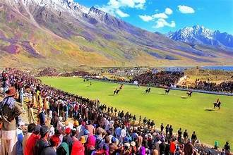
Handicraft and art
Embroidery and Weaving: Women in Phander Valley create beautifully embroidered clothes and woven carpets that reflect the valley's vibrant colors and traditional designs.
Craftsmanship: Some families craft items from wood, producing utensils, decorative pieces, and tools that reflect local skills.
Phander Valley’s culture remains largely untouched by modernity, allowing visitors to experience an authentic and serene way of life amidst
breathtaking landscapes. This connection to tradition, coupled with the community’s openness to share its heritage, makes Phander a
culturally enriching destination for anyone seeking to understand the lifestyle and values of the northern valleys of Pakistan.